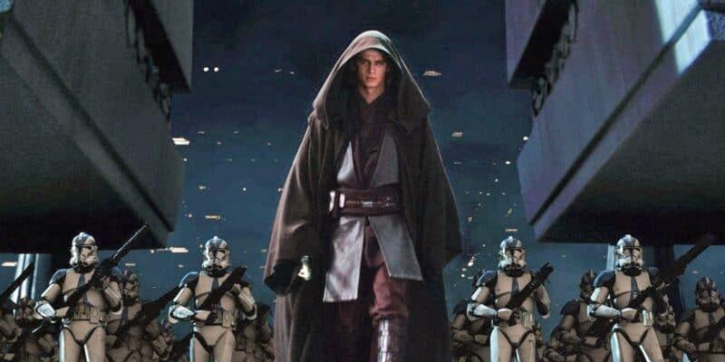
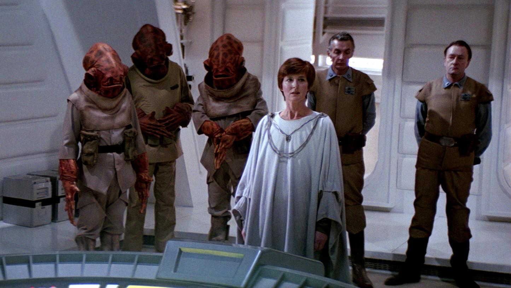
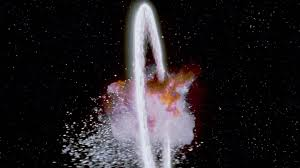
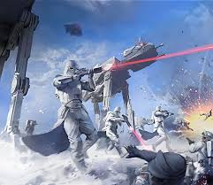
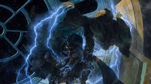

As soon as the Order 66 was executed, the seeds of rebellion were planted. The surviving Jedi and their allies went into hiding, while the Galactic Empire began to consolidate its power and suppress any dissent.

Mon Mothma and Bail Organa were among the first to organize resistance against the Empire. They worked to gather support and resources for the fledgling Rebel Alliance. No major battles were fought during this time, but the groundwork was being laid for the eventual conflict, through espionage, sabotage, and propaganda efforts against the Empire.

The destruction of the Death Star was a pivotal moment in the Galactic Civil War. It demonstrated that the Empire was not invincible and inspired hope among the Rebel Alliance. The Alliance also gained more allies and resources as a result of this victory, which helped to fuel their efforts against the Empire.

Lord Vader's pursuit of the Rebel Alliance led to the Battle of Hoth, where the Empire launched a surprise attack on the Rebel base. The Rebels were forced to retreat, and the Empire continued to hunt them across the galaxy.

The end of the Empire came with the death of Emperor Palpatine at the hands of his own apprentice, Darth Vader. This event marked the collapse of the Galactic Empire and the triumph of the Rebel Alliance. Darth Vader's redemption and sacrifice played a crucial role in the downfall of the Empire, and it also set the stage for the return of the Jedi Order. As now the Empire was leaderless and fragmented, the galaxy was able to rebuild and move towards a new era of peace and prosperity.
Hello Final Project!